Every screenshot below is captured by the e2e suite from the real built
extension (e2e/screenshots.spec.ts) against a hermetic mock network.
No key appears anywhere; regenerate any time with
npx playwright test e2e/screenshots.spec.ts.
The toolbar mark
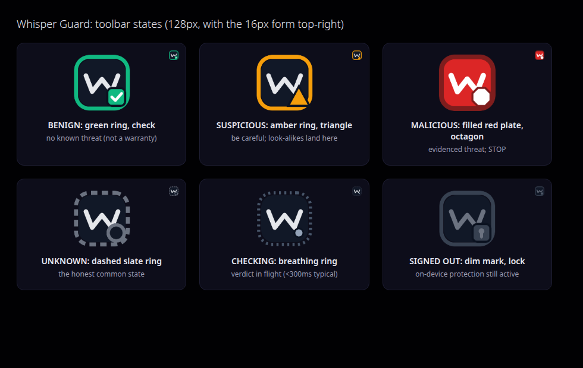
Six states, three redundant channels. Band is encoded in ring
color, badge shape, and ring style, so hue is never the only signal. The filled red
plate is reserved for evidenced-malicious. UNKNOWN is the honest common state.
The popup panel
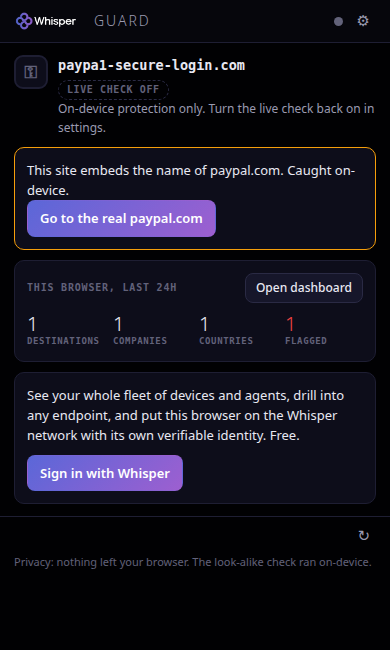
Keyless, the on-device hero. A look-alike of paypal.com caught
entirely in the browser; one tap goes to the real site. Shown with the live check off, so the
on-device detector is the whole story.
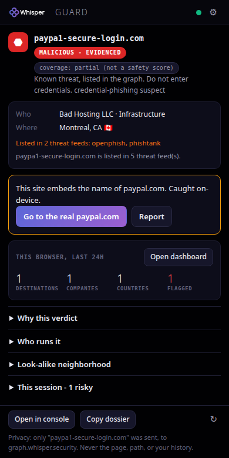
Keyed, evidenced-malicious. The band chip, the categorical
coverage chip (never a score), the impersonation row, and the per-host privacy line.
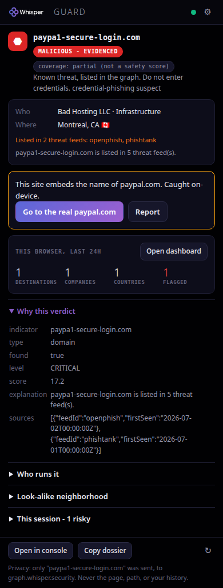
The why. whisper.explain with feed listings and dates,
rendered only when the graph supplies them.
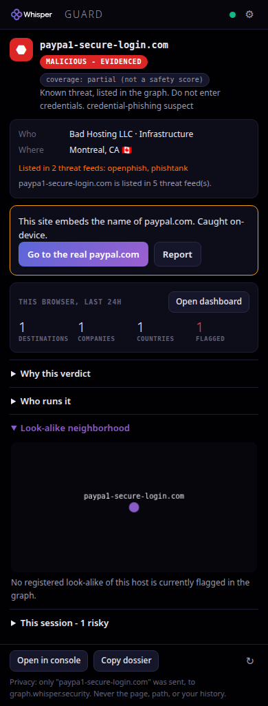
Look-alike neighborhood. Candidates generated on-device,
each confirmed against the graph; confirmed, not guesses.
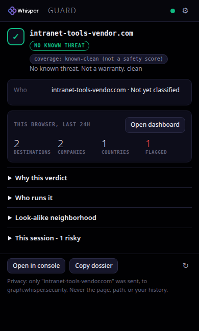
No known threat. Green, with the known-clean coverage chip,
and still explicitly not a warranty.
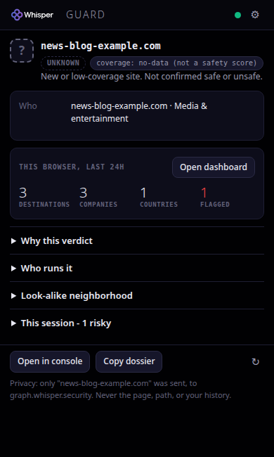
UNKNOWN, the honest common state. Slate, not green:
"not confirmed safe or unsafe" is the truth for most of the web.
The dashboard: where your devices go
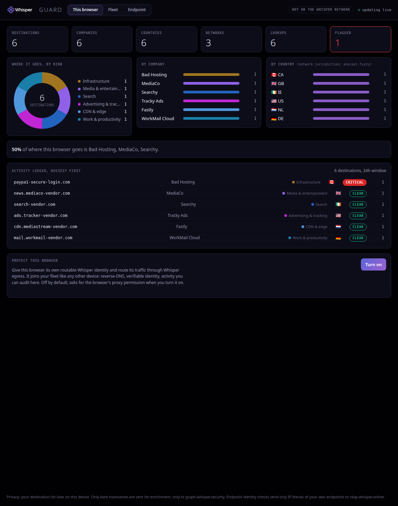
This browser (keyless keystone). The destinations this browser
navigated to, enriched through the graph into who answers, what kind, which country and
network, and a reconciled verdict. Tiles, a category donut, company and country breakdowns,
a concentration callout, and an activity ledger that updates live per navigation. Works with
no account; only bare hostnames are sent, only to the graph.
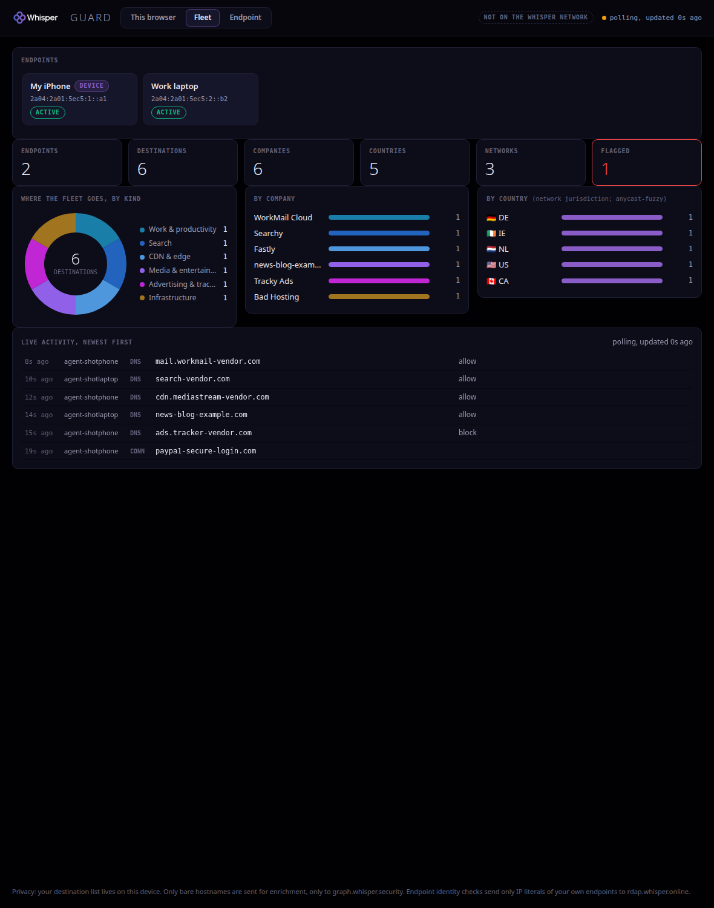
Fleet total (signed in). Every device and agent on your Whisper
account in one view: roster, merged last-24h destinations across the fleet, the same panels,
and an honest polling feed labelled "updated Ns ago".
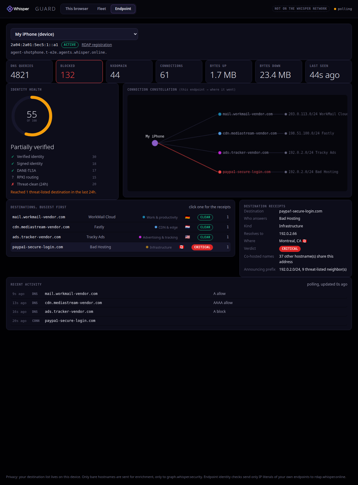
Per-endpoint drill-down (signed in). Live counters, an
explainable identity-health score (each factor met/unmet/unknown, never a black box), the
connection constellation from the endpoint to where it went, and destination receipts with
co-hosting fan-in and announcing-prefix threat neighbours, straight from the graph. An RDAP
provenance link anchors every identity.
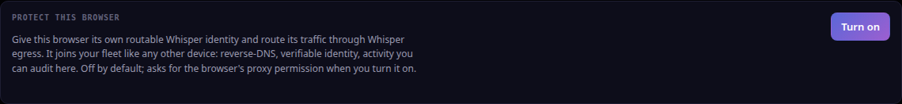
Protect this browser (opt-in, off by default). One toggle gives
this browser its own routable Whisper identity and routes its traffic through Whisper egress,
so it joins your fleet as a device. WebRTC hardened to proxied-only; the honest limits are
stated in place.
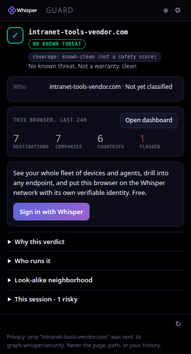
The popup carries a mini-dashboard. A four-tile summary of where
this browser goes, one click from the full view.
Before you click, before you type
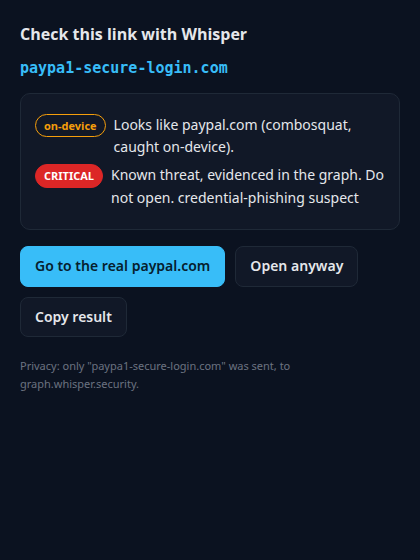
Pre-click check, keyless. Right-click any link: the destination
is vetted before anything loads. The truly pre-autofill surface.
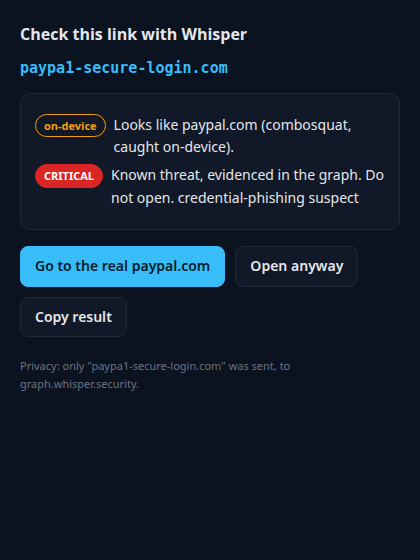
Pre-click check, signed in. The live band joins the on-device
verdict on the same surface.
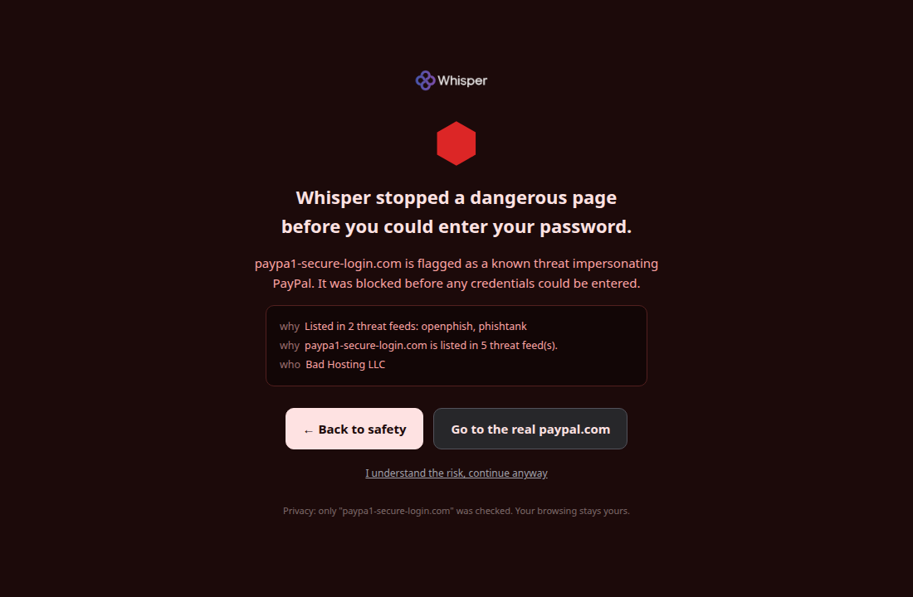
The full-page stop (Active Shield, evidenced-malicious only).
Back to safety always works; continue-anyway is one honest click, never a trap.
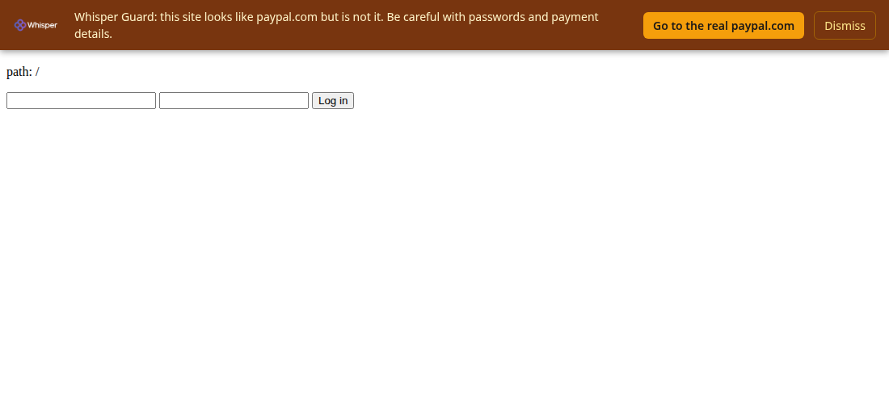
The amber banner never blocks. Injected only on flagged hosts,
only after the Active Shield opt-in, rendered in a closed shadow root.
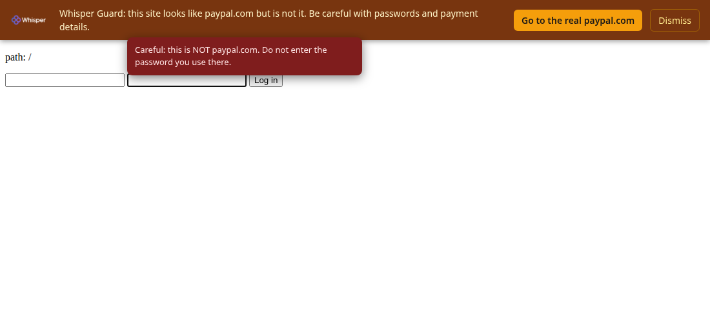
The password-field caution. Focusing a password field on a
flagged site draws one plain warning next to the field.
First run and settings
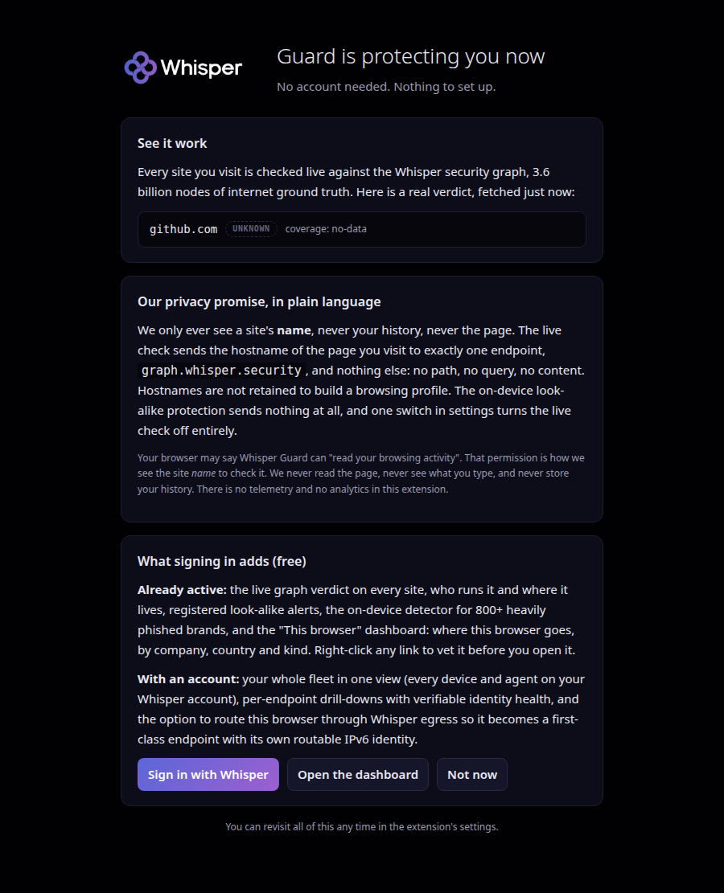
First run. Two cards, no config, no account wall: the privacy
promise in plain language and the honest scope. Protection is already on.
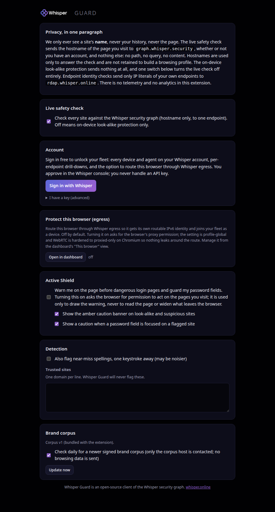
Settings. Sensible defaults, rarely touched. Sign-in is the
device flow; the paste-a-key fallback stays collapsed. No key on screen.
Whisper Guard is the client of the Whisper security graph:
only a site's hostname is ever checked, never the page, never your history.